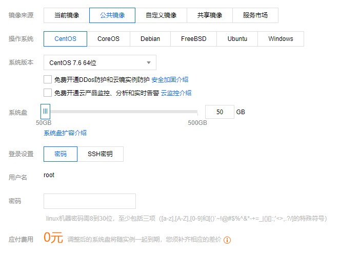
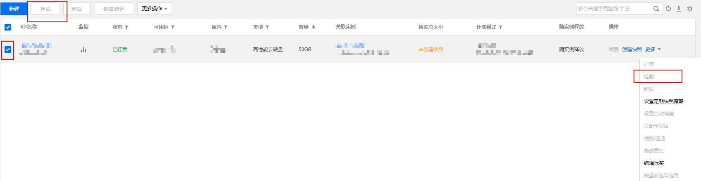

重装系统
咳咳，其实很多人都知道，国内的云平台的镜像都是”加料“的，并且因为机器配置有限，所以第一步就来重装下系统~
今天是 2020-04-25，本次决定尝鲜昨天刚刚发布了Ubuntu 20.04 LTS。
-
我们首先要额外购买一块云硬盘，最低配置(高性能云硬盘-10G-按量计费)即可，腾讯云中仅需0.01元/小时，但因为是预付费，所以需要先给账户充值0.01元，否则会创建失败。
-
安装CentOS 7的镜像(若使用Ubuntu则需要其他方式设置步骤7)。

- 下载ISO镜像并保存：
1
2
|
# 建议使用镜像站下载，Ubuntu镜像站地址列表https://launchpad.net/ubuntu/+cdmirrors?_ga=2.212473748.1617762926.1587788417-2021852887.1587644847
wget https://mirrors.tuna.tsinghua.edu.cn/ubuntu-releases/20.04/ubuntu-20.04-live-server-amd64.iso
|
下载完成后按照Ubuntu官网的建议进行验证以保证文件完整性：
1
2
3
4
|
# Run this command in your terminal in the directory the iso was downloaded to verify the SHA256 checksum:
echo "caf3fd69c77c439f162e2ba6040e9c320c4ff0d69aad1340a514319a9264df9f *ubuntu-20.04-live-server-amd64.iso" | shasum -a 256 --check
# You should get the following output:
ubuntu-20.04-live-server-amd64.iso: OK
|
-
挂载并初始化云硬盘(下文中假设该云硬盘挂载在/data)。
- 有两种方式在控制台处挂载，如果控制台一直显示挂载中，建议刷新浏览器页面：

- 控制台挂载成功后，按照腾讯云文档进入主机操作，需要执行步骤7-12（CentOS 7默认创建的就是root账户，如果是Ubuntu，使用
sudo passwd root设置root密码）。
-
将ISO镜像保存在数据盘的目录(/data)中：
1
|
mv ubuntu-20.04-live-server-amd64.iso /data
|
- 初始化云硬盘步骤4时如果未记录下硬盘的UUID，可以通过
blkid /dev/vdb获取。
- 编辑grub配置文件：
1
2
3
4
5
6
7
8
9
10
|
vi /etc/grub.d/40_custom
# 在最下方添加如下语句
menuentry "ubuntu-20.04-live-server-amd64.iso" {
set iso_path="/ubuntu-20.04-live-server-amd64.iso"
loopback loop (hd1)/$iso_path
linux (loop)/casper/vmlinuz inst.stage2=hd:UUID="4b256980-566e-4375-9814-9eb4d150e356" noeject iso-scan/filename=$iso_path
initrd (loop)/casper/initrd
}
# 其中的 UUID="4b256980-566e-4375-9814-9eb4d150e356"需要替换为步骤4获取的UUID
# /casper/vmlinuz 和 /casper/initrd 可以视情况更改为其他路径
|
- 编辑系统启动项中的grub配置文件：
1
2
3
|
vi /etc/default/grub
# 修改（或添加） GRUB_DEFAULT=saved
GRUB_DEFAULT="ubuntu-20.04-live-server-amd64.iso"
|
- 修改后更新grub2配置文件（ubuntu会出现grub2-mkconfig command not found） 。
1
|
grub2-mkconfig --output=/boot/grub2/grub.cfg
|
- 重启后正常安装，如果在启动时报错：
/casper/vmlinuz not found，表明步骤5中的vmlinuz路径设置错误，建议在本地下载ISO，在压缩文件中确认vmlinuz和initrd的路径并修改步骤5中的信息。
- 安装完成后需要按照腾讯云文档卸载云硬盘，并且在腾讯云的控制台销毁/退还。
完成以上步骤后，一个全新的Ubuntu 20.04 LTS即安装完成。如果对于官网镜像没有执着的追求，也可以试试Linux一键网络重装系统傻瓜版基本方式安装。